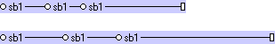
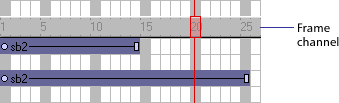

Using Director > Sprites > Positioning sprites > Changing the duration of a sprite on the Stage
Using Director > Sprites > Positioning sprites > Changing the duration of a sprite on the Stage |
Changing the duration of a sprite on the Stage
By default, Director assigns each new sprite a duration of 28 frames. You can change the duration of a sprite—that is, the amount of time the sprite appears in a movie—by adjusting its length, changing the number of frames in which it appears, or using the Extend command.

Director maintains the spacing proportions of keyframes when a sprite is lengthened. For a description of keyframes, see Animation overview.
To extend or shorten a sprite:
1 |
Choose Window > Score to display the Score. |
2 |
Do one of the following: |
Drag the start or end frames. To extend a one-frame sprite, Alt-drag (Windows) or Option-drag (Macintosh). |
|
To extend a sprite and leave the last keyframe in place, Alt-drag (Windows) or Option-drag (Macintosh) a keyframe at the end of the sprite. |
|
To extend a sprite and leave all keyframes in place, Control-drag (Windows) or Command-drag (Macintosh) the end frame. |
|
Enter new values in the Start and End fields of the Sprite tab of the Property Inspector to change the start and end frames. |
|
To extend a sprite to the current location of the playback head:
1 |
Select the sprite or sprites to extend. |
2 |
Click the frame channel to move the playback head: |
To extend the sprite, move the playback head past the right edge of the sprite.
 |
|
To shorten the sprite, move the playback head to the left of the sprite's right edge, inside the sprite. |
|
To move the sprite's start frame, place the playback head to the left of the sprite. |
|
3 |
Choose Modify > Extend Sprite. |